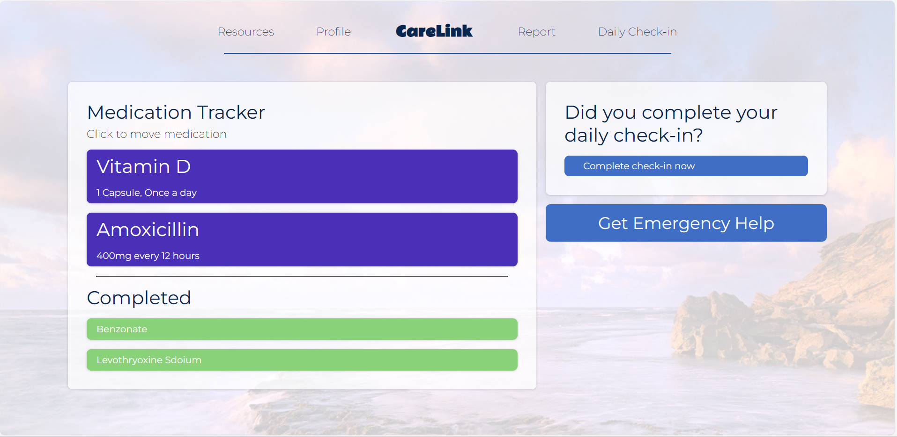

Project Details
Introduction
During my very first hackathon at McMaster University, called Deltahacks X, I worked on a team project to develop a healthcare app. Our team was driven by the goal of improving healthcare communication and continuity of care.
Inspiration
- Started at a healthcare workshop, inspired by the need for continuous patient care.
- Personal story: A team member's experience with their grandmother's terminal illness highlighted the lack of support for seniors in healthcare.
- Motivated by the fragmented nature of care and the desire to improve patient support systems.
What it does
- CareLink enhances healthcare communication through an intuitive app.
- Built with React, JavaScript, OpenAI, and EmailJS.
- Patients log health metrics; AI analyzes the data and routes it to appropriate caregivers (nurses, PSWs, family doctors).
- Ensures prompt medical attention and reduces the workload on healthcare workers.
How we built it
- Front end: React.
- Functionality: JavaScript.
- AI-driven data processing: OpenAI.
- Communication: EmailJS.
Challenges we ran into
- Integrating EmailJS and OpenAI API to fit the specific needs of the app was challenging.
- Worked through complex technical challenges to ensure smooth functionality.
Accomplishments that we're proud of
- Turned an idea into a real-world application.
- Successfully implemented AI to enhance healthcare communication.
- Effectively integrated multiple technologies.
What we learned
- Deeper understanding of AI applications in healthcare.
- Enhanced skills in React and JavaScript development.
- Learned how to integrate third-party services like EmailJS for practical use cases.
What's next for CareLink
- Expand functionality with more AI-driven personalized recommendations.
- Broaden integration with healthcare systems.
- Focus on improving patient engagement and continuous care support.